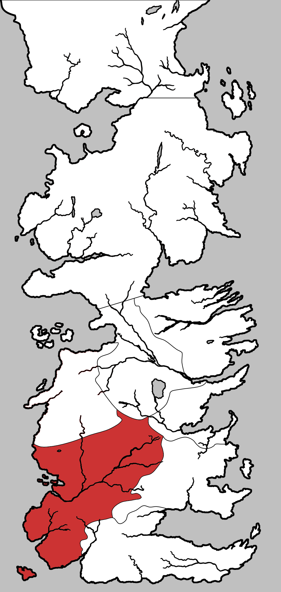

The Reach ( Reach )
The Reach is one of the constituent regions of the continent of Westeros, and was formerly a sovereign nation known as the Kingdom of the Reach before the Wars of Conquest. The Reach is ruled from the castle of Highgarden by House Tyrell. It is one of the larger regions of the Seven Kingdoms and considered the most fertile and heavily-populated part of Westeros. Bastards born in the Reach are given the surname Flowers.
Considered the home of chivalry in Westeros, the Reach is the place where knighthood is looked upon with the greatest reverence and esteemed the most. Rules to tournaments are the most stringent and managed here.
The Reach encompass a region of the most fertile part of Westeros and numerous and well-populated villages and towns. Bordering the Sunset Sea to the west, the Red Mountains of Dorne to the south-east, the hills of the Westerlands to the north-west and the Blackwater Rush to the far north-east. The region also includes several islands, including the Shield Islands at the mouth of the Mander, and the Arbor south of the Whispering Sound.
Two major roads cross the region, linking the Reach with Crownlands and Westerlands, at King’s Landing by the Roseroad and Lannisport by the Ocean Road, respectively. The Reach is watered by the immense river Mander and its many tributaries.
Map on Next page.

Map on Next page.
